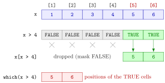

Logical Subsetting¶
Definition¶
Logical subsetting selects elements with a logical vector instead of with positions. If cond is a logical vector of the same length as x, then x[cond] keeps the elements of x at the positions where cond is TRUE and drops those where it is FALSE, in their original order. Usually cond is a comparison of x itself, as in x[x > 4].
For a data frame df, a logical vector with one entry per row selects rows: df[cond, ]. The function which(cond) returns the positions of the TRUE entries of cond, so x[which(cond)] is the same selection written with positions.
Interpretation¶
Logical subsetting is filtering by a yes-or-no question. The condition is evaluated first and produces a mask of TRUE and FALSE values; the square brackets then use the mask to keep or drop each position.

The figure takes the two steps apart for x <- c(1, 2, 3, 4, 5, 6). The middle row is the mask x > 4; only the cells under a TRUE reach the result, which is c(5, 6). On the right, which(x > 4) reports where those cells are, c(5, 6), which here happen to equal the values only because x holds the numbers 1 to 6.
Because the condition is an ordinary logical vector, it can be built from a different vector of the same length. That is how rows of a data frame are filtered: wage[wage$Age > 35, ] tests the Age column and uses the answer to pick whole rows, with every column kept because the column index after the comma is empty. Conditions can be combined with & and | (logical operators) or with %in% (membership operator).
The mask should have exactly one entry per element. A shorter logical index is recycled without a warning, so x[c(TRUE, FALSE)] silently keeps every second element. The other trap is a missing value in the condition: a position where the mask is NA produces an NA in the result, whereas which() skips it (missing values).
Key Results¶
x[cond]keeps the elements at theTRUEpositions ofcond, in their original order; the result is shorter thanxunless every entry isTRUE.which(cond)gives the indices of theTRUEentries and ignoresNAentries, sox[which(cond)]contains noNAcaused by the condition, whilex[cond]has anNAfor eachNAincond.- A logical index shorter than
xis recycled without a warning. df[cond, ]selects rows of a data frame; the comma is required, and the empty column index keeps all columns.- Assignment works through a mask too:
x[x > 4] <- 0replaces only the selected elements.
Examples¶
1. Mask, then selection. Evaluate the condition on its own to see the mask.
x <- c(1, 2, 3, 4, 5, 6)
x > 4
#> [1] FALSE FALSE FALSE FALSE TRUE TRUE
x[x > 4]
#> [1] 5 6
which(x > 4)
#> [1] 5 6
x[which(x > 4)]
#> [1] 5 6
The values and the positions differ as soon as the vector is not 1:6: for w <- c(10, 50, 20, 60), which(w > 30) is c(2, 4) while w[w > 30] is c(50, 60).
2. Filtering rows of a data frame. The data frame below is a small made-up extract in the style of a wage data set from a job platform (age in years, base pay in euros).
wage <- data.frame(
Gender = c("Female", "Male", "Female", "Male", "Male", "Female"),
Age = c(23, 37, 41, 29, 64, 52),
BasePay = c(52000, 89000, 74000, 61000, 120000, 98000)
)
# keep workers older than 35 and younger than 64
wage_sub <- wage[(wage$Age > 35) & (wage$Age < 64), ]
wage_sub
#> Gender Age BasePay
#> 2 Male 37 89000
#> 3 Female 41 74000
#> 6 Female 52 98000
nrow(wage_sub)
#> [1] 3
The worker aged 64 is dropped because the condition Age < 64 is strict. The row names 2, 3 and 6 show which rows of the original data were kept.
3. A missing value in the condition. x[cond] and x[which(cond)] differ when the condition contains NA.
y <- c(4, NA, 7, 9)
y > 5
#> [1] FALSE NA TRUE TRUE
y[y > 5]
#> [1] NA 7 9
y[which(y > 5)]
#> [1] 7 9
The comparison NA > 5 is unknown, so the logical index has an NA in position 2, and y[y > 5] returns an NA there. which() keeps only the definite TRUE positions 3 and 4.
4. Pitfalls: a short mask and replacement. A mask of the wrong length is recycled; assignment through a mask changes only the selected elements.
The two-element mask is repeated as TRUE, FALSE, TRUE, FALSE, TRUE, FALSE, which keeps the odd positions without any warning.
Prerequisites¶
Related Concepts¶
- Logical Operators
- Membership Operator %in%
- Counting with Logical Vectors
- Missing Values
- Vector Recycling
Sources¶
- Programming for EOR · Week 2
- Lecture 2 script, Part 1 (Conditional Operations and Sequences), section Logical Operations; Part 2 (Working with Data Frames, Built-in Functions, and Factors), section More on Data Frames
Aliases: logical indexing, boolean indexing, filtering rows, which(), which, subsetting with a condition Keywords: x[x > 4], logical index, which(), row filtering
Last updated: 10 November 2026 16:43
Logical SubsettingLogical OperatorsMissing ValuesComparison OperatorsSubsetting by PositionData FrameMembership Operator %in%Counting with Logical VectorsVector Recycling